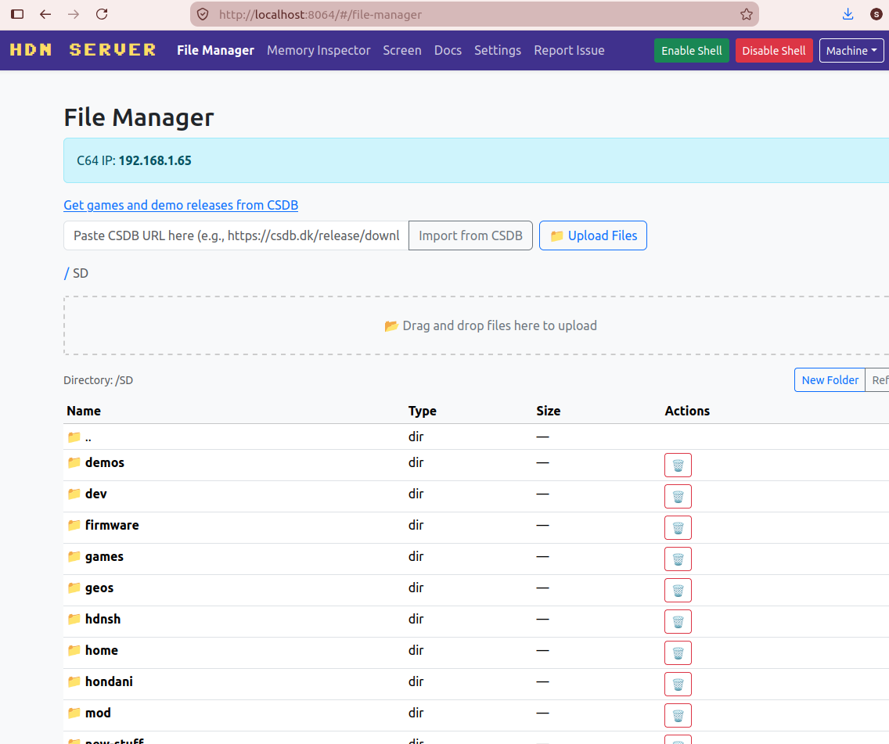
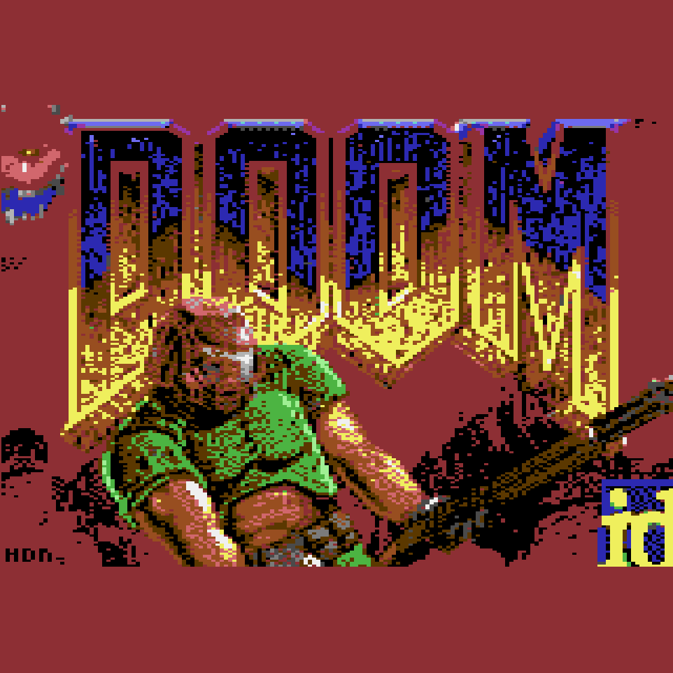

HDN Shell
A modern development environment for C64 Ultimate. Touch and feel of the C64 combined with modern functions. Throw your PC to the corner as a server and work on the C64 again.
Explore Shell
A modern development environment for C64 Ultimate. Touch and feel of the C64 combined with modern functions. Throw your PC to the corner as a server and work on the C64 again.
Explore Shell
C64 Ultimate running in 64MHz mode. This project explores the limits of what a modern FPGA-based Commodore 64 can do. A 3D shooter engine from scratch—25 FPS, optimized, open source.
Play Demo